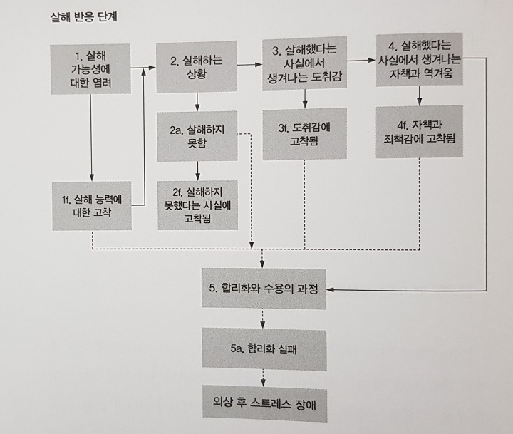
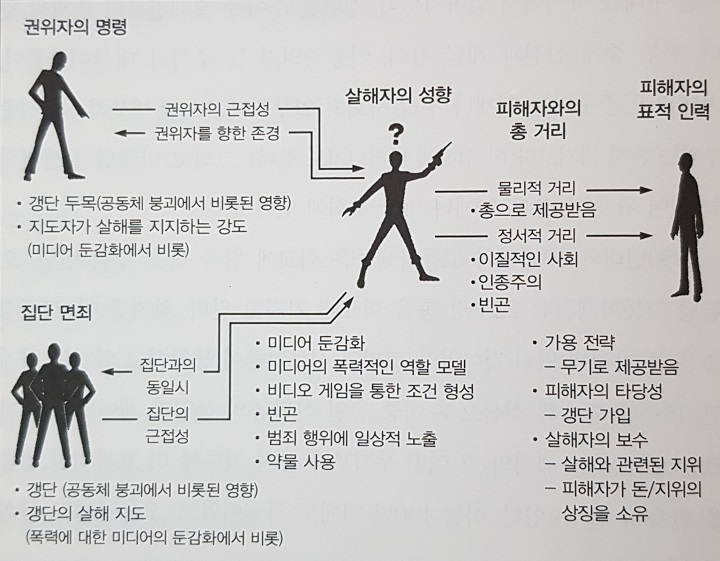

`ㅎㅇㅎㅇ
살인행위를 거부하게 하는 강력한 요인이 인간종에게 존재함
결정적순간(쏠까?말까?)에 양심적병역거부가 일어남
적을 살해하지 않았던 많은 군인들과 그에대한 증거가 많음
전쟁에서 일어나는 일에 대해 제대로 이해해야 한다
전투에 노출된(길든 짧든 결국에는) 군인들의 98%는 정신적 사상자가 됨
2%는 이미 미쳐있던 것으로 보임, 싸이코패스? 얘네는 놀랄만큼 오래 잘 싸움
왜 멘탈이 나갈까??
같은 상황에서 종군기자, 포로, 비전투원(위생병 등..) 보다 전투원들이 훨씬 심하게 공포를 느낌
책임감, 의무를 크게 느낌 - 모든 죽은 적군은 내탓, 모든 아군을 지켜야 한다고 느낌
우린 사실 신체적 고통, 상해에 대한 두려움을 즐기기도함
다른 사람의 적대감에 대해 가장 큰 공포를 느낀다 (모욕, 따돌림, 구타, 강간..)
훈련을 통한 예방접종?
학습된무기력..(탈출수단이 있어도 빠져나오지 않는 개)
무기력을 학습하기 전에 탈출을 해보면 다음부터는 무기력해지지않는다
군사훈련소에서는...
미디어의 영향
전쟁에서 무슨 일이 일어나는지 그대로 다루는 것은 고통스러움, 거부감
관계자들마저도 아래에서 나오는 내용에 대해 전부 알지 못함 ex) 참전용사의 어려움 --> 적응의 문제라고 생각함
"전쟁에서 일어나는 일에 대해 제대로 이해해야 한다"
성적 거리?
"우리 안에 자리한 어둠과 파괴의 힘은 동료 인간을 향한 빛과 사랑의힘으로 균형잡혀있다. 이 힘들은 우리 각자의 마음속에서 투쟁하며 서로 겨루고 있다. 한 쪽을 무시하는 것은 곧 다른 쪽을 무시하는 것과 같다. 어둠을 인정하지 않는다면, 우리는 빛을 알 수 없다. 죽음을 인정하지 않는다면, 우리는 삶을 알 수 없다."
권위에 대한 복종
집단 면죄
정서적 거리
피해자의 특성
전략의 타당성: 살해시도가 얼마나 성공가능?
피해자의 타당성, 보수
살해자의 성향
어떤훈련을 받았는가
최근의 경험: ex) 동료의 죽음..
'타고난 군인'의 기질
적용 -미라이 학살: 베트남 전쟁 중인 1968년 3월 16일 남베트남 미라이에서 발생한 미군에 의해 벌어진 민간인 대량 학살이다. - 검색 시 사진 주의..
"사회는 전투에서의 살해 과정과 살해에 따른 대가가 얼마나 엄청난 것인지를 이제 이해하려 해야한다. 사회가 이를 이해하고 나면, 살해는 결코 예전과 동일한 것으로 보이지 않게 될것이다."
잔학행위 : 비전투원을 죽이는것
잔학행위의 스펙트럼
잔학행위가 일어나는 이유
잔학행위에 대한 사람들의 일반적인 반응은 '부정'
"그러나 우리는 부인해서는 안된다...잔학행위의 존재를 불신하거나 외면하려는 이 단순하고 순진한 경향이야말로 오늘날 우리세계에 잔학 행위와 공포가 지속되는데 다른 그 어떤 요인들보다 더 큰 책임이 있을것이다"
잔학행위의 함정
명령을 거부한 사람들.... 넌 어쩔꺼임?
"이러한 행위들을 행하도록 허락하는 본성이 인간의 내면에 있다는 사실은
인류의 가장 혐오스러운 측면이다.
우리는 우리 자신이 이러한 본성에 이끌리도록 놔두어서는 안된다.
하지만 혐오감을 일으킨다고 해서 우리는 이를 무시할 수도 없다.
궁극적으로 이 연구의 목적은 이와 같은 전쟁의 가장 추악한 측면을 바라봄으로써,
그것을 이해하고, 명명하고, 대처하는 데 있다."

2차대전에서 80~85%병사들이 적에게 총을 쏘지않음
베트남에서 총을쏘지않는 병사의 비율은 5%
살인을 하도록 만드는 심리적 조건형성과정을 받음
상대의 고통에 둔감해지게함 : 잔인한 PT 구호-"죽여, 죽여, 죽여...", 적군은 인간이 아니라고 믿게함
훈련을통한 살해 조건 형성: 튀어오르는 사람모양 과녁(맞추면 넘어감), 빨간페인트가 담긴우유병, 풍선을 넣은 군복
-> 이런 훈련 결과에 보상(휴식, 인정)과 처벌(재훈련)
-> 실제 살해 후에도 표적처럼 생각하게됨(부인 방어기제 작동)
실제 상황에서 파블로프의 개처럼 방아쇠를 당기게 된다
살해한적이 없는 사람도 죄책감을 느낌(쏠 기회가 없었을 뿐, 눈앞에 나타나면 쐈을것이다)
조건형성과정으로 인해 큰 정신적 충격을 받은상태
전통적인 합리화의 성공 요인
안심을 주는 30대의 노련한 고참동료들
잔학행위를 자제하게만드는 교전수칙, 협약
전선과 분리된 안전지대
훈련~실전까지 함께한 신뢰할만한 가까운 친구
정신적 사상이 일어나기전에 귀환
승리, 업적 그들이 얻은이익에 대한 지식
퍼레이드와 기념비
귀환 후, 전우들과의 모임, 의사소통
전쟁과 그의 행동은 정당하고 올바르며 필요한 일이었다는 것을 끊임없이 말해주는 주변사람들
"옮은 일을 했다'라는 칭찬 - 메달, 훈장, 사회의 인정
베트남에서는 위에 나온요인들중 많은것들이 부재
어렸었던 군인들
더러운 전쟁 - 비정규군을 상대로한 전쟁, 잔학행위, 수류탄을 던지는 아이들..
안전지대가 없었음
유대감이 없었음 - 부대가 아니라 개인 단위로 파견되고 귀환함
향정신성 약물이 사용됨 - 증상만 없애주는 역할 - 부상을 마취만 하고 싸우는 상황
복무를 마치고 돌아왔을 때 환영, 퍼레이드, 사회적 인정 x (패배한 전쟁)
비난, 침을 뱉는 사람들(반전운동가?)
안정기간 없이 바로 사회에 적응해야 했음
참전용사모임 x
-->미국역사상 가장 많은 정신적 사상자가 발생하게됨
외상 후 스트레스 장애 : 심리적 충격에 대한 반응
유산과 교훈
합리화가 가능하도록 해야함..
살해에 수반되는 과정들을 이해, 도덕적 방향제시, 철학적 지침도 반드시 훈련
군인들은..
"군인도 사람일 뿐.."
57년 이후, 미국에서 인구당 폭행이 가파르게 늘고있음
우리 청소년들은 "시계태엽오렌지"를 역으로 경험하고 있다. - 고통, 살해를 오락으로 소비함
왜 아이들이 학교에 총을 가져오게 되었는가?
게임이나 영화 중 일부가 조건형성에 유용하게 작용 가능함

감성의 회복을 위하여
"우리는 아주 손쉽게 인간의 심리적 안전장치를 밀어젖히는 법을 알고있다.
우리는 그러한 심리적 안전장치가 어디에 있고, 그것이 무엇인지, 어떻게 작동하는지,
그리고 어떻게 다시 제자리로 되돌려놓을 수 있는지를 이해해야 한다."